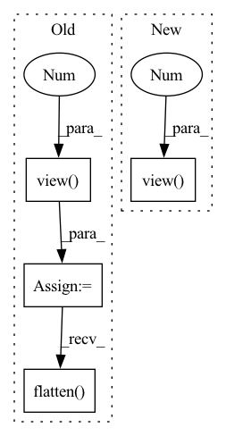

Pattern ID :27781

Before Change
i_ids = feed_dict["item_id"]
batch_size = feed_dict["batch_size"]
i_ids = i_ids.view(batch_size, -1)
cf_u_vectors = self.u_embeddings(u_ids)
cf_i_vectors = self.i_embeddings(i_ids)
u_bias = self.user_bias(u_ids)
i_bias = self.item_bias(i_ids).squeeze(-1)
self.embedding_l2.extend([cf_u_vectors, cf_i_vectors])
prediction = (cf_u_vectors[:, None, :] * cf_i_vectors).sum(dim=-1)
prediction = (prediction + u_bias + i_bias).flatten()
out_dict = {"prediction": prediction, "check": self.check_list}
return out_dict
After Change
prediction = (cf_u_vectors[:, None, :] * cf_i_vectors).sum(dim=-1)
prediction = prediction + u_bias + i_bias
out_dict = {"prediction": prediction.view(batch_size, -1), "check": self.check_list}
return out_dict
def get_feed_dict(self, corpus, data, batch_start, batch_size, phase):
In pattern: SUPERPATTERN
Frequency: 3
Non-data size: 4
Instances
Fragment ID: 82288583
Project Name: thuwangcy/rechorus
Commit Name: 25fac75a3939959fb807d2413754135b9b650fec
Time: 2020-05-19
Author: wangcy18@mails.tsinghua.edu.cn
File Name: src/models/BPR.py
M Class Name: BPR
N Class Name: BPR
M Method Name: forward(2)
N Method Name: forward(2)
M Parent Class: BaseModel
N Parent Class: BaseModel
M File Name: src/models/BPR.py
N File Name: src/models/BPR.py
M Start Line: 32
M End Line: 45
N Start Line: 33
N End Line: 44
'>
Before Change
i_ids = feed_dict["item_id"]
batch_size = feed_dict["batch_size"]
i_ids = i_ids.view(batch_size, -1)
u_vectors = self.u_embeddings(u_ids)
i_vectors = self.i_embeddings(i_ids)
self.embedding_l2.extend([u_vectors, i_vectors])
mf_vector = u_vectors[:, None, :] * i_vectors
for i in range(len(self.layers) - 1):
mf_vector = getattr(self, "layer_%d" % i)(mf_vector).relu()
mf_vector = torch.nn.Dropout(p=self.dropout)(mf_vector)
prediction = self.prediction(mf_vector).flatten()
out_dict = {"prediction": prediction, "check": self.check_list}
return out_dict
After Change
u_vectors = self.u_embeddings(u_ids)
i_vectors = self.i_embeddings(i_ids)
self.embedding_l2.extend([u_vectors, i_vectors.view(-1, self.emb_size)])
mf_vector = u_vectors[:, None, :] * i_vectors
for i in range(len(self.layers) - 1):
'>
Fragment ID: 82288588
Project Name: thuwangcy/rechorus
Commit Name: 25fac75a3939959fb807d2413754135b9b650fec
Time: 2020-05-19
Author: wangcy18@mails.tsinghua.edu.cn
File Name: src/models/GMF.py
M Class Name: GMF
N Class Name: GMF
M Method Name: forward(2)
N Method Name: forward(2)
M Parent Class: BaseModel
N Parent Class: BaseModel
M File Name: src/models/GMF.py
N File Name: src/models/GMF.py
M Start Line: 39
M End Line: 54
N Start Line: 40
N End Line: 53
'>
Before Change
lengths = feed_dict["lengths"] // [real_batch_size]
batch_size = feed_dict["batch_size"]
i_ids = i_ids.view(batch_size, -1)
i_vectors = self.i_embeddings(i_ids)
his_vectors = self.i_embeddings(history)
self.embedding_l2.extend([i_vectors, his_vectors])
// Sort and Pack
sort_his_lengths, sort_idx = torch.topk(lengths, k=len(lengths))
sort_his_vectors = his_vectors.index_select(dim=0, index=sort_idx)
history_packed = torch.nn.utils.rnn.pack_padded_sequence(sort_his_vectors, sort_his_lengths, batch_first=True)
// RNN
output, hidden = self.rnn(history_packed, None)
// Unsort
sort_rnn_vector = self.out(hidden[-1])
unsort_idx = torch.topk(sort_idx, k=len(lengths), largest=False)[1]
rnn_vector = sort_rnn_vector.index_select(dim=0, index=unsort_idx)
// Predicts
prediction = (rnn_vector[:, None, :] * i_vectors).sum(-1).flatten()
out_dict = {"prediction": prediction, "check": self.check_list}
return out_dict
After Change
// Predicts
prediction = (rnn_vector[:, None, :] * i_vectors).sum(-1)
out_dict = {"prediction": prediction.view(batch_size, -1), "check": self.check_list}
return out_dict
def get_feed_dict(self, corpus, data, batch_start, batch_size, phase):
'>
Fragment ID: 82288585
Project Name: thuwangcy/rechorus
Commit Name: 25fac75a3939959fb807d2413754135b9b650fec
Time: 2020-05-19
Author: wangcy18@mails.tsinghua.edu.cn
File Name: src/models/GRU4Rec.py
M Class Name: GRU4Rec
N Class Name: GRU4Rec
M Method Name: forward(2)
N Method Name: forward(2)
M Parent Class: BaseModel
N Parent Class: BaseModel
M File Name: src/models/GRU4Rec.py
N File Name: src/models/GRU4Rec.py
M Start Line: 33
M End Line: 59
N Start Line: 36
N End Line: 58